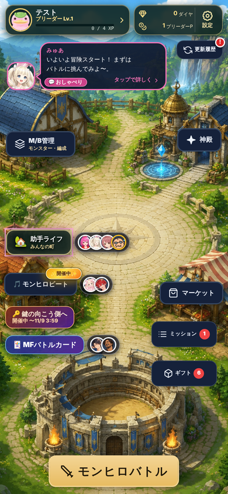
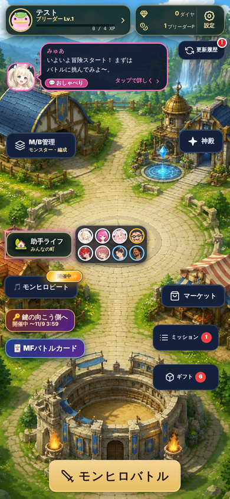
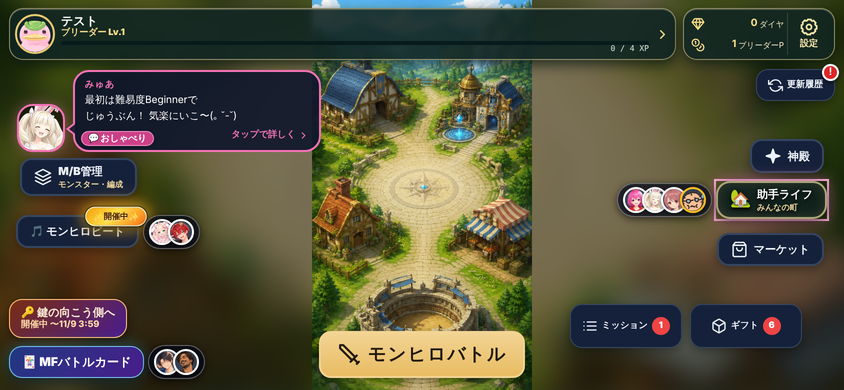
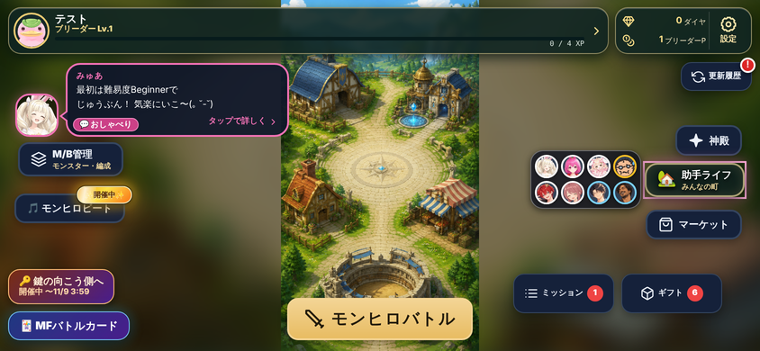

<!doctype html><html lang="ja"><head><meta charset="utf-8"><title>助手ライフ 作り込み</title>
<!-- 2026-11-07 ナカヨシ5。助手ライフの専用ページを作り込んだ止め絵(縦・横)。本物の絵: 町=HOME の村の絵(時間帯で塗り替え)/場面=お話の背景・助手の立ち絵/顔=助手の顔の絵 -->
<style>
*{box-sizing:border-box;margin:0;padding:0}
body{background:#0b1020;font-family:"Hiragino Sans","Noto Sans JP","WenQuanYi Zen Hei",sans-serif;color:#fff;padding:18px;width:max-content}
.row{display:flex;gap:18px;align-items:flex-start;margin-bottom:22px}
.cap{font-size:14px;font-weight:900;color:#fde68a;margin-bottom:6px;width:390px;line-height:1.4}
.cap.w{width:844px}.cap small{display:block;font-size:11px;color:#cbd5e1;font-weight:700}
.ph{width:390px;height:844px;border-radius:28px;border:2px solid #334155;overflow:hidden;position:relative;background:#070b1d}
.ld{width:844px;height:390px;border-radius:24px;border:2px solid #334155;overflow:hidden;position:relative;background:#070b1d}
.abs{position:absolute}
/* ===== 町の地図 ===== */
.map{position:absolute;overflow:hidden;background:#1b3b2c}
.map .art{position:absolute;left:0;top:0;transform-origin:0 0}
.map .art img.v{position:absolute;left:0;top:0;width:941px;height:1672px}
.map .sidefill{position:absolute;inset:-20px;background:url(../../../../monster-hero/data/images/home-background.jpg) center/cover;filter:blur(14px) brightness(.55)}
.tint{position:absolute;inset:0;pointer-events:none}
/* 時間帯 */
.t-morning img.v{filter:saturate(.8) brightness(1.06) sepia(.22) hue-rotate(-6deg)}
.t-morning .tint.a{background:linear-gradient(180deg,rgba(255,180,190,.42),rgba(255,226,170,.18) 45%,rgba(200,225,255,.22));mix-blend-mode:screen}
.t-morning .tint.b{background:linear-gradient(0deg,rgba(255,255,255,.5),rgba(255,255,255,0) 40%)}
.t-noon .tint.a{background:radial-gradient(ellipse 120px 60px at 30% 40%,rgba(0,20,40,.18),transparent),radial-gradient(ellipse 140px 70px at 80% 75%,rgba(0,20,40,.16),transparent)}
.t-evening img.v{filter:saturate(1.1) brightness(.92)}
.t-evening .tint.a{background:linear-gradient(180deg,rgba(255,110,70,.7),rgba(255,150,80,.5) 50%,rgba(110,50,90,.6));mix-blend-mode:multiply}
.t-evening .tint.b{background:linear-gradient(110deg,rgba(255,200,120,.35),transparent 55%);mix-blend-mode:screen}
.t-night img.v{filter:brightness(.42) saturate(.65) hue-rotate(-12deg)}
.t-night .tint.a{background:linear-gradient(180deg,rgba(30,40,110,.55),rgba(20,30,80,.35));mix-blend-mode:multiply}
.glow{position:absolute;border-radius:50%;pointer-events:none;mix-blend-mode:screen}
.win{background:radial-gradient(circle,rgba(255,214,120,.95),rgba(255,170,60,.35) 40%,transparent 70%)}
.lamp{background:radial-gradient(circle,rgba(255,236,170,.9),rgba(255,200,90,.25) 45%,transparent 70%)}
.blue{background:radial-gradient(circle,rgba(140,220,255,.9),rgba(60,160,255,.3) 45%,transparent 70%)}
.star{position:absolute;width:2px;height:2px;border-radius:50%;background:#fff;box-shadow:0 0 4px #fff}
.fly{position:absolute;width:4px;height:4px;border-radius:50%;background:#e9ff9a;box-shadow:0 0 8px 2px #d9f99d}
.mote{position:absolute;font-size:13px;opacity:.9;text-shadow:0 1px 3px #0009}
/* 場所の札と顔 */
.pin{position:absolute;transform:translate(-50%,-100%);display:flex;flex-direction:column;align-items:center}
.pin .who{display:flex;align-items:center;padding:2px 4px;border-radius:999px;background:rgba(2,6,23,.62);border:1px solid rgba(255,255,255,.4);box-shadow:0 3px 10px #000a;position:relative}
.pin .who img{width:30px;height:30px;border-radius:50%;border:2px solid #fff;background:#334155;object-fit:cover}
.pin .who img+img{margin-left:-9px}
.pin .who img.lonely{border-color:#fbbf24;box-shadow:0 0 8px #fbbf24}.pin .who img.after{border-color:#7dd3fc}
.pin .bond{position:absolute;top:-9px;left:50%;transform:translateX(-50%);font-size:9px;font-weight:900;white-space:nowrap;background:linear-gradient(90deg,#f472b6,#fb923c);border-radius:999px;padding:0 6px;border:1px solid #fff8}
.pin .eye{position:absolute;right:-12px;top:-10px;width:20px;height:20px;border-radius:50%;background:#fde047;color:#422006;font-size:11px;display:grid;place-items:center;border:2px solid #fff;box-shadow:0 0 10px #fde047}
.pin .bub{position:absolute;left:100%;top:-6px;margin-left:8px;white-space:nowrap;font-size:9px;font-weight:800;background:#fff;color:#1e293b;border-radius:10px;padding:2px 7px;box-shadow:0 2px 6px #0007}
.pin .bub:before{content:"";position:absolute;left:-4px;top:7px;border:4px solid transparent;border-right-color:#fff;border-left:0}
.pin .zz{position:absolute;right:-10px;top:-12px;font-size:13px}
.plq{margin-top:3px;display:flex;align-items:center;gap:3px;font-size:10px;font-weight:900;padding:2px 8px 2px 5px;border-radius:8px;background:linear-gradient(#5b3a1e,#3b2412);border:1.5px solid #e8c37a;color:#fff3d6;box-shadow:0 2px 6px #000b;white-space:nowrap}
.plq i{font-style:normal;font-size:12px}
.pin.empty .plq{opacity:.78;filter:saturate(.6)}
.pin.lock .plq{background:#1f2937;border-color:#64748b;color:#94a3b8}
.edge{position:absolute;display:flex;align-items:center;gap:4px;font-size:10px;font-weight:900;padding:3px 8px 3px 5px;border-radius:999px;background:rgba(2,6,23,.78);border:1px solid #fde68a99}
.edge img{width:22px;height:22px;border-radius:50%;border:1.5px solid #fff;object-fit:cover}.edge img+img{margin-left:-7px}
/* ===== 画面の部品(モンヒロビートの入口とそろえる) ===== */
.hdr{position:absolute;left:0;right:0;top:0;padding:10px 12px 8px;background:linear-gradient(180deg,#140b2e,#140b2ef0 70%,#140b2e00);z-index:5}
.hdr .back{position:absolute;left:12px;top:14px;width:30px;height:30px;display:grid;place-items:center;font-size:18px;color:#e2e8f0}
.hdr .en{margin-left:38px;font-size:9px;letter-spacing:.18em;font-weight:900;color:#f9a8d4}
.hdr .ti{margin-left:38px;font-size:22px;font-weight:900;line-height:1.05;background:linear-gradient(90deg,#fff,#fbcfe8 60%,#fde68a);-webkit-background-clip:text;color:transparent}
.clock{position:absolute;right:10px;top:8px;text-align:right;border-radius:12px;padding:4px 8px;border:1px solid #ffffff33;background:rgba(15,23,42,.7)}
.clock b{display:block;font-size:12px}.clock small{font-size:9px;color:#cbd5e1}
.meter{display:flex;align-items:center;gap:6px;margin:10px 0 0 38px;font-size:10px;font-weight:900}
.meter .chip{display:flex;align-items:center;gap:3px;background:linear-gradient(90deg,#be185d,#f59e0b);padding:1px 7px;border-radius:999px;font-size:10px}
.meter .bar{flex:1;height:7px;border-radius:9px;background:#ffffff1f;overflow:hidden;position:relative}.meter .bar i{position:absolute;inset:0;width:58%;background:linear-gradient(90deg,#f472b6,#fbbf24)}
.meter .bar s{position:absolute;top:0;bottom:0;width:2px;background:#0b1020}
.meter small{color:#cbd5e1;font-size:9px;white-space:nowrap}
.tiles{display:grid;grid-template-columns:1fr 1fr;gap:8px}
.tile{position:relative;height:66px;border-radius:12px;padding:8px 10px 6px 50px;clip-path:polygon(0 0,92% 0,100% 22%,100% 100%,0 100%);overflow:hidden;box-shadow:inset 0 -4px 0 #0003}
.tile .ic{position:absolute;left:8px;top:12px;font-size:28px;filter:drop-shadow(0 2px 2px #0006)}
.tile b{display:block;font-size:17px;font-weight:900;line-height:1.15;text-shadow:0 1px 2px #0007}
.tile small{display:block;font-size:9.5px;font-weight:800;line-height:1.25;opacity:.95}
.tile .wm{position:absolute;right:6px;bottom:-4px;font-size:22px;font-weight:900;font-style:italic;color:#fff;opacity:.2;letter-spacing:.02em}
.tile .cnt{position:absolute;right:12px;top:8px;font-size:10px;font-weight:900;background:#0f172acc;border-radius:999px;padding:1px 6px}
.watch{background:linear-gradient(135deg,#fb7185,#f59e0b)}.call{background:linear-gradient(135deg,#38bdf8,#6366f1)}
.give{background:linear-gradient(135deg,#34d399,#16a34a)}.visit{background:linear-gradient(135deg,#475569,#1e293b);color:#cbd5e1}
.visit b{color:#e2e8f0}
.people{display:flex;justify-content:space-between;padding:6px 8px;border-radius:14px;background:rgba(15,23,42,.75);border:1px solid #ffffff1f}
.pp{display:flex;flex-direction:column;align-items:center;width:40px;position:relative}
.pp img{width:34px;height:34px;border-radius:50%;border:2px solid #fff;object-fit:cover;background:#334155}
.pp img.lonely{border-color:#fbbf24;box-shadow:0 0 8px #fbbf24}
.pp .at{position:absolute;right:0;top:20px;font-size:10px;background:#0f172a;border-radius:50%;width:16px;height:16px;display:grid;place-items:center;border:1px solid #fff6}
.pp span{font-size:8.5px;font-weight:900;color:#fbcfe8;margin-top:1px;white-space:nowrap}
.icons{display:flex;gap:6px}
.icons span{flex:1;height:52px;border-radius:12px;background:rgba(30,41,59,.85);border:1px solid #ffffff2a;display:flex;flex-direction:column;align-items:center;justify-content:center;font-size:9.5px;font-weight:900;color:#e2e8f0;position:relative}
.icons span i{font-style:normal;font-size:18px;line-height:1.1}
.icons span.on{background:linear-gradient(#f472b633,#f472b611);border-color:#f9a8d4;color:#fff}
.icons span.lock{opacity:.5}.icons span .bd{position:absolute;right:4px;top:3px;width:8px;height:8px;border-radius:50%;background:#ef4444}
.lbl{font-size:10px;font-weight:900;color:#cbd5e1;margin:0 0 4px 2px;display:flex;justify-content:space-between}
.lbl em{font-style:normal;color:#94a3b8;font-weight:700}
/* 場面 */
.scene{position:absolute;inset:0;overflow:hidden}
.scene .bgimg{position:absolute;inset:0;background-size:cover;background-position:center}
.stand{position:absolute;bottom:0;object-fit:contain;object-position:bottom;filter:drop-shadow(0 6px 12px #0008)}
.talk{position:absolute;border-radius:16px;border:2px solid #f472b6;background:rgba(2,6,23,.93);padding:10px 12px}
.talk .nm{font-size:11px;font-weight:900;color:#f9a8d4;display:flex;align-items:center;gap:5px}
.talk .nm img{width:22px;height:22px;border-radius:50%;border:1.5px solid #f9a8d4}
.talk p{font-size:13.5px;font-weight:700;line-height:1.55;margin-top:3px}
.talk .nx{position:absolute;right:10px;bottom:6px;font-size:9px;color:#f9a8d4;font-weight:900}
.emo{position:absolute;font-size:22px;filter:drop-shadow(0 2px 3px #0008)}
.gain{display:flex;gap:6px;justify-content:center}
.gain span{font-size:13px;font-weight:900;border-radius:999px;padding:5px 11px;background:rgba(15,23,42,.88);border:1.5px solid #fde68a;box-shadow:0 0 18px #fbbf2499}
.spark{position:absolute;color:#fde68a;font-size:14px;text-shadow:0 0 8px #fbbf24}
.acts{display:flex;gap:6px}.acts span{flex:1;text-align:center;font-size:12px;font-weight:900;border-radius:12px;padding:10px 0;color:#fff}
.note{position:absolute;font-size:10px;font-weight:800;color:#0b1020;background:#fde68a;border-radius:8px;padding:2px 7px;box-shadow:0 2px 6px #0008;z-index:20;white-space:nowrap}
.ab{position:absolute;font-size:11px;font-weight:900;color:#fff;background:#db2777;border-radius:8px;padding:2px 7px;z-index:21}
.panel{position:absolute;border-radius:16px;background:rgba(15,23,42,.92);border:1px solid #ffffff22}
</style></head><body>
<div id="root"></div>
<script>
const R='../../../../monster-hero/';
const F=(id,e='happy')=>`${R}images/assistant/face/${id}_${e}.PNG`;
const ST=(id,e='happy')=>`${R}images/assistant/${id}_${e}.PNG`;
// 場所(HOME の村の絵の上の位置。絵の元の大きさ 941×1672)
const P={studio:[230,360,'🎵','練習スタジオ'],ranch:[95,640,'🥚','育成場'],library:[760,410,'📚','図書室'],garden:[640,560,'🌷','中庭'],
 plaza:[478,790,'⛲','広場'],cafe:[150,880,'🍰','おやつ屋さん'],market:[810,930,'🛍','マーケット'],home:[70,1090,'🏡','みんなの家'],
 cardroom:[460,1370,'🃏','カード部屋'],hill:[800,170,'🌄','ひなたの丘']};
// いまの様子(HOME の止め絵と同じ)
const NOW={plaza:{who:[['kiki','happy'],['myua','happy']],bond:'🤝Lv5 名コンビ',eye:1,bub:'おやつ中…'},
 studio:{who:[['momosuke','excited'],['atsu','happy']],bond:'🤝Lv2',eye:1,bub:'♪ 練習中'},
 library:{who:[['kyuko','normal']],bub:'読書中'},home:{who:[['dra','troubled','lonely']],bub:'さみしそう…'},
 cardroom:{who:[['sorashido','excited'],['erubin','happy']],eye:1}};
const NIGHT={plaza:{who:[['kiki','normal'],['myua','happy'],['kyuko','happy']],bond:'🤝3人',eye:1,bub:'星を見に…'},
 studio:{who:[['momosuke','excited']],bub:'♪ 夜の練習'},home:{who:[['dra','normal'],['atsu','happy']],zz:1,bub:'おやすみ'},
 cardroom:{who:[['sorashido','excited'],['erubin','happy']],eye:1,bub:'計算中…'}};
const glows=(t,s)=>{ if(t!=='night') return '';
 const W=[[190,330,40],[260,380,30],[700,430,34],[770,470,30],[120,860,34],[170,900,28],[780,960,40],[860,980,30],[430,1330,46],[500,1330,46],[300,1500,60],[640,1500,60]];
 const L=[[470,760,60],[640,560,90,'blue'],[478,790,70,'blue'],[340,1060,40],[600,1060,40]];
 return W.map(([x,y,r])=>`<div class="glow win" style="left:${x-r}px;top:${y-r}px;width:${2*r}px;height:${2*r}px"></div>`).join('')+
   L.map(([x,y,r,c])=>`<div class="glow ${c||'lamp'}" style="left:${x-r}px;top:${y-r}px;width:${2*r}px;height:${2*r}px"></div>`).join('');};
const motes=(t)=>{ // 場所ごとの小さな動き(止め絵では1こま)
 const m={morning:[[280,300,'🐦'],[330,280,'🐦'],[160,830,'♨']],noon:[[250,300,'♪'],[290,270,'♫'],[160,830,'♨'],[470,1300,'✦'],[840,880,'🎏']],
  evening:[[250,300,'♪'],[160,830,'♨'],[470,1300,'✦'],[520,1320,'✦']],night:[[250,300,'♪'],[470,1300,'✦']]}[t]||[];
 return m.map(([x,y,c])=>`<div class="mote" style="left:${x}px;top:${y}px;font-size:${c==='♨'?22:26}px">${c}</div>`).join('');};
const stars=(t,w,h)=>{ if(t!=='night') return ''; let s='';let k=7;for(let i=0;i<40;i++){k=(k*9301+49297)%233280;const x=k%941;k=(k*9301+49297)%233280;const y=k%260;s+=`<div class="star" style="left:${x}px;top:${y}px;opacity:${.4+(i%5)/8}"></div>`;}
 for(let i=0;i<14;i++){k=(k*9301+49297)%233280;const x=k%941;k=(k*9301+49297)%233280;const y=500+k%900;s+=`<div class="fly" style="left:${x}px;top:${y}px"></div>`;} return s;};
// 地図: w,h=窓の大きさ / sc=絵の縮尺 / oy=絵の上を何px切るか(元の大きさで)/ ox=横のずらし(画面px)
function map({w,h,sc,oy,ox=0,t='noon',now=NOW,pins=true,edges=true,top=0,left=0,side=false}){
 const dx=ox, art=`<div class="art" style="transform:translate(${dx}px,${-oy*sc}px) scale(${sc})">${glows(t)}${stars(t)}${motes(t)}</div>`;
 let pinH='';
 if(pins) for(const [k,[x,y,ic,nm]] of Object.entries(P)){
  const sx=dx+x*sc, sy=(y-oy)*sc; if(sy<40||sy>h-4||sx<0||sx>w) continue;
  const n=now[k];
  pinH+=`<div class="pin ${n?'':'empty'}" style="left:${sx}px;top:${sy}px">${n?`<div class="who">${n.bond?`<span class="bond">${n.bond}</span>`:''}${n.who.map(([i,e,c])=>``).join('')}${n.eye?'<span class="eye">👀</span>':''}${n.zz?'<span class="zz">💤</span>':''}${n.bub?`<span class="bub">${n.bub}</span>`:''}</div>`:''}<div class="plq"><i>${ic}</i>${nm}</div></div>`;}
 let edgeH='';
 if(edges) for(const [k,[x,y,ic,nm]] of Object.entries(P)){ const sy=(y-oy)*sc; const n=now[k]; if(!n) continue;
  if(sy<40) edgeH+=`<div class="edge" style="left:${Math.min(w-150,dx+x*sc-40)}px;top:8px">▲ ${ic}${nm}${n.who.map(([i,e])=>``).join('')}</div>`;
  if(sy>h-4) edgeH+=`<div class="edge" style="left:${Math.max(6,dx+x*sc-70)}px;bottom:8px">▼ ${ic}${nm}${n.who.map(([i,e])=>``).join('')}${n.eye?' 👀':''}</div>`;}
 return `<div class="map t-${t}" style="left:${left}px;top:${top}px;width:${w}px;height:${h}px">${side?'<div class="sidefill"></div>':''}${art}<div class="tint a"></div><div class="tint b"></div>${pinH}${edgeH}</div>`;}
const header=({t='noon',clock='☀ 昼 10〜14時',left='午後まで あと1時間12分',land=false}={})=>`<div class="hdr" style="${land?'right:auto;width:100%':''}"><div class="back">←</div><div class="en">ASSISTANT LIFE · TOWN</div><div class="ti">助手ライフ</div>
 <div class="clock"><b>${clock}</b><small>${left}</small></div>
 <div class="meter"><span class="chip">🎉 にぎやか ×1.5</span><span class="bar"><i></i><s style="left:17%"></s><s style="left:50%"></s></span><small>お祭りまで 50</small></div></div>`;
const tiles=(cmp)=>`<div class="tiles">
 <div class="tile watch"><span class="ic">👀</span><span class="cnt">あと14</span><b>見守る</b><small>3か所で話してる</small><span class="wm">WATCH</span></div>
 <div class="tile call"><span class="ic">💬</span><span class="cnt">無料</span><b>声をかける</b><small>ドラがさみしそう</small><span class="wm">INVITE</span></div>
 <div class="tile give"><span class="ic">🧺</span><span class="cnt">あと1回</span><b>渡す</b><small>差し入れ2・しるし1</small><span class="wm">GIFT</span></div>
 <div class="tile visit"><span class="ic">🔒</span><b>訪ねる</b><small>だれかと友情Lv5で開く</small><span class="wm">VISIT</span></div></div>`;
const PEOPLE=[['myua','happy','⛲','Lv5'],['kiki','happy','⛲','Lv4'],['momosuke','excited','🎵','Lv3'],['dra','troubled','🏡','Lv3','lonely'],['atsu','happy','🎵','Lv2'],['kyuko','normal','📚','Lv2'],['sorashido','excited','🃏','Lv1'],['erubin','happy','🃏','Lv1']];
const people=(sz)=>`<div class="people">${PEOPLE.map(([i,e,at,lv,c])=>`<div class="pp" ${sz?`style="width:${sz}px"`:''}><span class="at" ${sz?`style="top:${sz-26}px"`:''}>${at}</span><span>💗${lv}</span></div>`).join('')}</div>`;
const icons=()=>`<div class="icons"><span class="on"><i>🗺</i>町</span><span><i>🤝</i>友情<b class="bd"></b></span><span><i>📖</i>アルバム</span><span><i>🎒</i>道具</span><span><i>❓</i>遊びかた</span></div>`;

let html='<section id="tate">';
html+=`<div class="row">
<div><p class="cap">① HOME(縦): 遊んでいる所の施設の横に顔だけ(本物の HOME に重ねた)<small>🎵ビート=練習中の2人 / 🃏カード=カード研究の2人 / 新しい施設「🏡 助手ライフ」=町と家にいる4人(さみしそうな子は黄色の縁)。帯は作らない</small></p><div class="ph"></div></div>
<div><p class="cap">①' 8人が全部 町・家にいる日も、上限で切らずに全部出す<small>4人ずつ2段に並べる(札の高さに合わせる)。顔を押すと、その子のいる場面へ</small></p><div class="ph"></div></div>
`;
// ===== 縦 1段目: 町(昼)・町(夜)・場面 =====
html+=`
<div><p class="cap">② 助手ライフ(縦・昼)<small>モンヒロビートの入口と同じ組み立て: 英字の小見出し+大きい題・にぎわいの帯・大きな絵(町)・色の大きな札4枚・下のアイコンの列</small></p><div class="ph">
 ${map({w:390,h:516,sc:.4145,oy:0,t:'noon',top:0})}
 ${header()}
 <div class="abs" style="left:10px;right:10px;top:522px"><div class="lbl">今日やれること<em>朝4時に戻る</em></div>${tiles()}</div>
 <div class="abs" style="left:10px;right:10px;top:684px"><div class="lbl">💗 仲良し度・いまどこ<em>顔を押すと その子の様子</em></div>${people()}</div>
 <div class="abs" style="left:10px;right:10px;bottom:12px">${icons()}</div>
 <span class="note" style="left:150px;top:222px">👀 = いま見守れる</span><span class="note" style="left:260px;top:462px">▼ 画面の外の場所</span>
</div></div>
<div><p class="cap">②' 同じ町の夜(21〜24時)<small>空が暗くなり、窓・街灯・噴水に灯り。星とホタル。組と過ごし方も時間で変わる(寝ている子は💤)</small></p><div class="ph">
 ${map({w:390,h:516,sc:.4145,oy:0,t:'night',now:NIGHT,top:0})}
 ${header({clock:'🌙 夜 21〜24時',left:'深夜まで あと48分'})}
 <div class="abs" style="left:10px;right:10px;top:522px"><div class="lbl">今日やれること<em>朝4時に戻る</em></div>${tiles()}</div>
 <div class="abs" style="left:10px;right:10px;top:684px"><div class="lbl">💗 仲良し度・いまどこ<em>顔を押すと その子の様子</em></div>${people()}</div>
 <div class="abs" style="left:10px;right:10px;bottom:12px">${icons()}</div>
</div></div>
<div><p class="cap">③ 場面(広場・夕方)<small>場所の絵の上に2人の立ち絵。その場で掛け合い → 終わると 友情Lv・仲良し度・にぎわいが花火で上がる → その場でできること</small></p><div class="ph">
 <div class="scene"><div class="bgimg" style="background-image:url(${R}images/story-bg/monhero_plaza_evening.jpg)"></div>
  <div class="tint" style="background:linear-gradient(180deg,rgba(255,170,90,.25),transparent 40%,rgba(10,6,30,.65) 75%)"></div>
  <div class="tint" style="background:linear-gradient(115deg,rgba(255,220,150,.45),transparent 45%);mix-blend-mode:screen"></div>
  
  
  <span class="emo" style="left:62px;top:250px">♪</span><span class="emo" style="left:300px;top:220px">✨</span>
  <span class="mote" style="left:40px;top:180px;font-size:16px">🍂</span><span class="mote" style="left:330px;top:330px;font-size:14px">🍂</span>
 </div>
 <div class="hdr" style="background:linear-gradient(180deg,#1a0f2ef2,#1a0f2e00)"><div class="back">←</div><div class="en">PLAZA · EVENING</div><div class="ti" style="font-size:20px">⛲ 広場</div>
  <div class="clock"><b>🌇 夕方</b><small>町へ戻る</small></div>
  <div class="meter" style="margin-top:8px"><span class="chip" style="background:linear-gradient(90deg,#db2777,#a855f7)">🤝 きき・みゅあ 友情Lv5 名コンビ</span><span class="bar"><i style="width:72%"></i></span><small>Lv6 まで 28</small></div></div>
 <div class="abs gain" style="left:0;right:0;top:118px"><span>🤝 友情Lv +3</span><span>💗 仲良し度 +2</span><span>🎉 +2</span></div>
 <span class="spark" style="left:70px;top:105px">✦</span><span class="spark" style="left:320px;top:100px">✧</span><span class="spark" style="left:190px;top:160px">✦</span>
 <div class="talk" style="left:10px;right:10px;bottom:150px"><div class="nm">きき</div><p>みゅあちん、ほっぺたに<br>クリームがついていますよ</p><span class="nx">1/3 ・ タップで次へ ▼</span></div>
 <div class="abs" style="left:10px;right:10px;bottom:68px;display:flex;gap:6px;font-size:10px;font-weight:900;color:#e2e8f0"><span style="flex:1;border-radius:10px;padding:6px 8px;background:#0f172acc;border:1px solid #ffffff22">💬 この場所の思い出 <b style="color:#fde68a">12/40</b></span><span style="flex:1;border-radius:10px;padding:6px 8px;background:#0f172acc;border:1px solid #ffffff22">📷 この2人のアルバム <b style="color:#fde68a">8話</b></span></div>
 <div class="abs acts" style="left:10px;right:10px;bottom:14px"><span style="background:linear-gradient(135deg,#34d399,#16a34a)">🧺 渡す</span><span style="background:linear-gradient(135deg,#38bdf8,#6366f1)">💬 誘う</span><span style="background:#334155">🗺 町へ</span></div>
</div></div></div>`;

// ===== 縦 2段目: 入場の演出(3こま)・時間帯の4枚・友情 =====
const mini=(inner,cap)=>`<div><div style="width:190px;height:411px;border-radius:18px;border:2px solid #334155;overflow:hidden;position:relative;background:#070b1d">${inner}</div><p style="font-size:10px;font-weight:800;color:#cbd5e1;width:190px;margin-top:4px;line-height:1.35">${cap}</p></div>`;
const ent1=`<div class="abs" style="inset:0;background:radial-gradient(circle at 50% 42%,#4c1d95,#140b2e 60%,#05030f)"></div>
 <div class="abs" style="left:0;right:0;top:120px;text-align:center"><div style="font-size:54px;filter:drop-shadow(0 0 18px #f9a8d4)">🏡</div><div style="font-size:9px;letter-spacing:.2em;color:#f9a8d4;font-weight:900;margin-top:6px">ASSISTANT LIFE</div><div style="font-size:24px;font-weight:900;background:linear-gradient(90deg,#fff,#fbcfe8,#fde68a);-webkit-background-clip:text;color:transparent">助手ライフ</div></div>
 <div class="abs" style="left:0;right:0;bottom:60px;text-align:center;font-size:10px;color:#cbd5e1">☀ 昼 10〜14時</div>`;
const ent2=`${map({w:190,h:411,sc:.27,oy:300,ox:-32,t:'noon',pins:false,edges:false})}
 <div class="abs" style="left:-40px;top:-30px;width:180px;height:200px;border-radius:50%;background:#fff;opacity:.92;filter:blur(8px)"></div><div class="abs" style="right:-50px;top:200px;width:180px;height:220px;border-radius:50%;background:#fff;opacity:.9;filter:blur(8px)"></div>
 <div class="abs" style="left:0;right:0;top:170px;text-align:center;font-size:20px;font-weight:900;text-shadow:0 2px 8px #000">助手ライフ</div>`;
const ent3=`${map({w:190,h:411,sc:.24,oy:330,ox:-18,t:'noon',edges:false})}
 <div class="abs" style="left:6px;right:6px;bottom:8px;border-radius:12px;border:2px solid #f472b6;background:#020617ee;padding:6px 8px;font-size:9.5px;font-weight:700;line-height:1.45"><b style="color:#f9a8d4;font-size:9px">みゅあ</b><br>おかえり、テストちん！ いま広場で ひめちんとおやつ中〜</div>`;
const tod=(t,lab)=>`<div style="position:relative;width:140px;height:230px;border-radius:14px;overflow:hidden;border:2px solid #334155">${map({w:140,h:230,sc:.22,oy:380,ox:-33,t,pins:false,edges:false})}<span class="abs" style="left:6px;top:6px;font-size:11px;font-weight:900;background:#000a;border-radius:8px;padding:1px 7px">${lab}</span></div>`;
// 友情の画面: 関係図と道のり
const ring=['myua','kiki','momosuke','dra','atsu','kyuko','sorashido','erubin'];
const pos=ring.map((_,i)=>{const a=-Math.PI/2+i*2*Math.PI/8;return [195+108*Math.cos(a),190+108*Math.sin(a)];});
const links=[[0,1,5],[2,3,3],[0,3,6],[4,6,2],[7,5,2],[1,5,1],[6,7,4],[0,2,2]];
const rel=`<svg class="abs" style="left:0;top:0" width="390" height="500">${links.map(([a,b,l])=>`<line x1="${pos[a][0]}" y1="${pos[a][1]}" x2="${pos[b][0]}" y2="${pos[b][1]}" stroke="${l>=5?'#f472b6':l>=3?'#fbbf24':'#94a3b8'}" stroke-width="${1+l*1.1}" stroke-linecap="round" opacity=".85"/>`).join('')}</svg>`+
 links.map(([a,b,l])=>`<span class="abs" style="left:${(pos[a][0]+pos[b][0])/2-14}px;top:${(pos[a][1]+pos[b][1])/2-8}px;font-size:9px;font-weight:900;background:#0f172a;border:1px solid #ffffff44;border-radius:8px;padding:0 4px">Lv${l}</span>`).join('')+
 ring.map((id,i)=>``).join('');
const road=[['✅','町の地図','はじめから'],['✅','見守る・声をかける','はじめから'],['✅','友情(関係図)','友情Lv3の2人ができた'],['✅','道具','はじめて手に入れた'],['🔒','家を訪ねる','だれかの友情Lv5/遊んだ日 7日 (いま5日)'],['🔒','お泊まり会','友情Lv7'],['🗓','季節の行事','その日だけ町に札が立つ']];
html+=`<div class="row">
<div><p class="cap">④ 入場の演出(縦)<small>1. 題が光る → 2. 雲が左右に開いて町を見下ろす → 3. 顔が場所へポンと落ち、選んでいる助手がひとこと。その日2回目からは 2→3 だけ(0.4秒・タップで飛ばせる)</small></p>
 <div style="display:flex;gap:8px">${mini(ent1,'1. 題(0.3秒)。空の色は今の時間帯')}${mini(ent2,'2. 雲が開いて町へ寄る(0.5秒)')}${mini(ent3,'3. 顔が落ちて、ひとこと({name} で呼ぶ)')}</div>
 <p class="cap" style="margin-top:14px">町の絵の時間帯(朝・昼・夕・夜)<small>空の色・影の向き・灯りが変わる。だれもいない場所は静か、いる場所だけ音符・湯気・火花が動く</small></p>
 <div style="display:flex;gap:8px">${tod('morning','🌅 朝 5〜10')}${tod('noon','☀ 昼 10〜14')}${tod('evening','🌇 夕方 18〜21')}${tod('night','🌙 夜 21〜')}</div>
</div>
<div><p class="cap">⑤ 友情(下の「🤝 友情」)<small>8人の関係図(線の太さと色=友情Lv)。2人を押すと その2人の思い出。下は「遊ぶほど開く」道のり</small></p><div class="ph" style="background:radial-gradient(circle at 50% 30%,#3b1d5a,#140b2e 60%,#070b1d)">
 <div class="hdr" style="background:none"><div class="back">←</div><div class="en">ASSISTANT LIFE · FRIENDS</div><div class="ti">友情</div><div class="clock"><b>🤝 友だち 6組</b><small>名コンビ 1組</small></div></div>
 <div class="abs" style="left:0;top:60px;width:390px;height:500px">${rel}</div>
 <div class="abs" style="left:12px;top:112px;font-size:9px;font-weight:800;color:#cbd5e1;display:flex;gap:10px"><span><b style="color:#94a3b8">━</b> Lv1〜2 知り合い</span><span><b style="color:#fbbf24">━</b> Lv3〜4 友だち</span><span><b style="color:#f472b6">━</b> Lv5〜 名コンビ</span></div>
 <div class="panel" style="left:10px;right:10px;top:388px;padding:10px 12px">
  <div class="lbl" style="font-size:11px;color:#fde68a">遊ぶほど開く<em>次: 家を訪ねる</em></div>
  ${road.map(([m,a,b],i)=>`<div style="display:flex;align-items:center;gap:8px;padding:6px 0;border-bottom:1px dashed #ffffff1a;${m==='🔒'?'opacity:.72':''}"><span style="width:24px;height:24px;border-radius:50%;display:grid;place-items:center;font-size:12px;background:${m==='✅'?'#16a34a':m==='🔒'?'#334155':'#7c3aed'}">${m==='✅'?'✓':m}</span><b style="font-size:12.5px;flex:1">${a}</b><small style="font-size:9.5px;color:#cbd5e1;text-align:right;max-width:150px">${b}</small></div>`).join('')}
  <div style="margin-top:8px;height:8px;border-radius:9px;background:#ffffff1f;overflow:hidden"><i style="display:block;height:100%;width:71%;background:linear-gradient(90deg,#f472b6,#fbbf24)"></i></div>
  <p style="font-size:9.5px;color:#cbd5e1;margin-top:4px">家まで: 遊んだ日 5/7 ・ きき×みゅあ 友情Lv5 ✓ → 次に町へ来たら開く</p>
  <div style="margin-top:10px;display:flex;align-items:center;gap:8px;border-radius:12px;background:#1e1b4b;border:1px solid #a78bfa55;padding:7px 9px"><span style="display:flex"></span><span style="font-size:10.5px;font-weight:800;flex:1">📷 さっきの思い出「ほっぺのクリーム」<br><small style="color:#c4b5fd;font-size:9px">広場・夕方 ・ アルバムに入りました</small></span></div>
 </div>
</div></div></div>`;

// ===== 横 =====
html+=`</section><section id="yoko"><div class="row"><div><p class="cap w">⑥ HOME(横): 同じく施設の横に顔。「🏡 助手ライフ」は右の列(神殿とマーケットのあいだ)</p><div class="ld"></div></div>
<div><p class="cap w">⑥' HOME(横)で8人が町・家にいる日(4人ずつ2段)</p><div class="ld"></div></div></div>`;
html+=`<div class="row"><div><p class="cap w">⑦ 助手ライフ(横・夕方)<small>左に町(HOME の横と同じく、絵の左右はぼかして広げる)、右に 題・時間・にぎわい・今日やれること・みんな・アイコンの列</small></p><div class="ld">
 ${map({w:520,h:390,sc:.42,oy:515,ox:62,t:'evening',side:true})}
 <div class="abs" style="left:520px;top:0;right:0;bottom:0;background:linear-gradient(180deg,#1a0f2e,#0b1020);padding:8px 10px">
  <div style="display:flex;align-items:flex-start;gap:6px"><span style="font-size:18px;color:#e2e8f0;width:24px">←</span><div style="flex:1"><div class="en" style="font-size:8px;letter-spacing:.18em;font-weight:900;color:#f9a8d4">ASSISTANT LIFE · TOWN</div><div style="font-size:19px;font-weight:900;line-height:1.05;background:linear-gradient(90deg,#fff,#fbcfe8,#fde68a);-webkit-background-clip:text;color:transparent">助手ライフ</div></div><div style="text-align:right;font-size:10px;font-weight:900;border:1px solid #ffffff33;border-radius:10px;padding:2px 6px;background:#0f172a">🌇 夕方<br><small style="font-size:8px;color:#cbd5e1;font-weight:700">夜まで 1:12</small></div></div>
  <div class="meter" style="margin:5px 0 7px 0"><span class="chip">🎉 にぎやか ×1.5</span><span class="bar"><i></i></span><small>お祭りまで 50</small></div>
  <div class="tiles" style="gap:6px">
   <div class="tile watch" style="height:50px;padding:5px 8px 4px 40px"><span class="ic" style="font-size:22px;top:10px">👀</span><span class="cnt">あと14</span><b style="font-size:14px">見守る</b><small>3か所で話してる</small></div>
   <div class="tile call" style="height:50px;padding:5px 8px 4px 40px"><span class="ic" style="font-size:22px;top:10px">💬</span><b style="font-size:14px">声をかける</b><small>ドラがさみしそう</small></div>
   <div class="tile give" style="height:50px;padding:5px 8px 4px 40px"><span class="ic" style="font-size:22px;top:10px">🧺</span><span class="cnt">あと1回</span><b style="font-size:14px">渡す</b><small>差し入れ2・しるし1</small></div>
   <div class="tile visit" style="height:50px;padding:5px 8px 4px 40px"><span class="ic" style="font-size:20px;top:10px">🔒</span><b style="font-size:14px">訪ねる</b><small>友情Lv5で開く</small></div></div>
  <div style="margin-top:7px">${people(37)}</div>
  <div class="icons" style="margin-top:7px">${['🗺 町','🤝 友情','📖 アルバム','🎒 道具','❓'].map((s,i)=>`<span class="${i?'':'on'}" style="height:34px;font-size:9px;flex-direction:row;gap:3px">${s}</span>`).join('')}</div>
 </div>
</div></div>
<div><p class="cap w">⑧ 場面(横・カード部屋・夜)<small>場所の絵が無い所は、町の絵のその建物を大きく切り抜いて使う(あとで絵を差し替えるだけで入る)。立ち絵は左右、台詞は下</small></p><div class="ld">
 <div class="scene"><div class="map t-night" style="left:0;top:0;width:844px;height:390px"><div class="art" style="transform:translate(-460px,-1180px) scale(1.35)">${glows('night')}</div><div class="tint a"></div></div>
  <div class="tint" style="backdrop-filter:blur(2px);background:linear-gradient(180deg,rgba(10,6,30,.2),rgba(10,6,30,.65))"></div>
  
  
  <span class="emo" style="left:250px;top:70px">❗</span><span class="emo" style="right:250px;top:80px">😉</span>
  <span class="spark" style="left:420px;top:150px;font-size:18px">✦</span><span class="spark" style="left:380px;top:120px">✧</span>
 </div>
 <div class="abs" style="left:12px;top:10px;display:flex;align-items:center;gap:8px"><span style="font-size:18px">←</span><b style="font-size:17px">🃏 カード部屋</b><span class="chip" style="font-size:10px;font-weight:900;background:linear-gradient(90deg,#db2777,#a855f7);border-radius:999px;padding:1px 8px">🤝 Lv4 いい友だち</span></div>
 <div class="abs" style="right:12px;top:10px;font-size:10px;font-weight:900;border:1px solid #ffffff33;border-radius:10px;padding:3px 8px;background:#0f172acc">🌙 夜 ・ 💗 ソラシド Lv1 / えるびん Lv1</div>
 <div class="talk" style="left:230px;right:230px;bottom:58px"><div class="nm">ソラシド</div><p>えるさんの今の組み方、どの表にも載ってないぞ！</p><span class="nx">1/3 ▼</span></div>
 <div class="abs acts" style="left:230px;right:230px;bottom:10px"><span style="background:linear-gradient(135deg,#34d399,#16a34a);padding:8px 0">🧺 渡す</span><span style="background:linear-gradient(135deg,#38bdf8,#6366f1);padding:8px 0">💬 誘う</span><span style="background:#334155;padding:8px 0">🗺 町へ</span></div>
</div></div></div>`;
html+='</section>';
html+=`<section id="ab"><p class="cap w" style="font-size:18px;width:1300px">社長に選んでもらう所(A が おすすめ)</p><div class="row">
<div><p class="cap">❶ 町の地図の絵<small>A: HOME の村の絵を時間帯で塗り替えて使う(上の②)。建物が場所に合う・地図らしい<br>B: お話の背景(森・広場・町並み)を横につないで、左右に流す。朝・夕・夜の絵が本物にある</small></p>
 <div style="display:flex;gap:8px"><div style="position:relative;width:190px;height:300px;border-radius:14px;overflow:hidden;border:3px solid #f472b6">${map({w:190,h:300,sc:.2,oy:250,ox:1,t:'noon',edges:false})}<span class="ab" style="left:6px;top:6px">A</span></div>
 <div style="position:relative;width:190px;height:300px;border-radius:14px;overflow:hidden;border:2px solid #334155;background:#000"><div style="position:absolute;left:-70px;top:40px;display:flex;height:200px">${['forest_evening','monhero_plaza_evening','monhero_town'].map(b=>``).join('')}</div>
  <div class="pin" style="left:60px;top:150px"><div class="who"></div><div class="plq"><i>⛲</i>広場</div></div>
  <div class="abs" style="left:0;right:0;bottom:30px;text-align:center;font-size:11px;font-weight:900">◀ 左右に流して 場所をえらぶ ▶</div><span class="ab" style="left:6px;top:6px;background:#475569">B</span></div></div></div>
<div><p class="cap">❷ 下の作り<small>A: モンヒロビートと同じ。色の大きな札4枚(今日やれること)+アイコンの列(町・友情・アルバム・道具・遊びかた)<br>B: 前の案。下にタブ4つ(町・友情・道具・家)、今日やれることは1行</small></p>
 <div style="display:flex;gap:8px"><div style="position:relative;width:190px;height:300px;border-radius:14px;overflow:hidden;border:3px solid #f472b6;background:#0b1020;padding:8px"><div style="transform:scale(.47);transform-origin:0 0;width:370px">${tiles()}<div style="height:8px"></div>${people()}<div style="height:8px"></div>${icons()}</div><span class="ab" style="right:6px;top:6px">A</span></div>
 <div style="position:relative;width:190px;height:300px;border-radius:14px;overflow:hidden;border:2px solid #334155;background:#0b1020">
  <div class="abs" style="left:6px;right:6px;top:150px;border-radius:10px;border:1px solid #fcd34d88;background:#1c1405;padding:5px 7px;font-size:9px"><b style="color:#fde68a">今日やれること ▸</b> 👀 見守る あと14 ・ 💬 ドラがさみしそう ・ 🧺 1回</div>
  <div class="abs" style="left:0;right:0;bottom:0;display:flex;background:#0f172a;border-top:1px solid #ffffff22">${['🗺<br>町','🤝<br>友情','🎒<br>道具','🏡<br>家'].map((x,i)=>`<span style="flex:1;text-align:center;font-size:9px;font-weight:900;padding:8px 0;${i?'color:#94a3b8':'background:#f472b622'}">${x}</span>`).join('')}</div><span class="ab" style="left:6px;top:6px;background:#475569">B</span></div></div></div>
<div><p class="cap">❸ 入場の演出<small>A: 毎回出す。その日の最初は 題→雲が開く→顔が落ちる(1.2秒)、2回目からは 雲→顔 だけ(0.4秒)。タップで飛ばせる<br>B: その日の最初だけ。2回目からはすぐ町</small></p>
 <div style="display:flex;gap:8px">${mini(ent1,'A/B どちらも、この題の画面から始まる')}</div></div>
<div><p class="cap">❹ 助手ライフの曲<small>A: 今ある曲から「風がそよぐ場所」(モンヒロビートにもある 1分40秒の穏やかな曲)を町の曲にする<br>B: 新しく1曲(社長が用意。来るまでは HOME の曲のまま)</small></p>
 <div style="width:390px;border-radius:14px;border:1px solid #334155;background:#0f172a;padding:12px;font-size:12px;font-weight:800;line-height:1.7">🎵 時間帯で曲は変えない(段階1)<br>🔇 設定の BGM の音量に従う<br>⏹ 場面に入っても曲は止めない</div></div>
</div></section>`;
document.getElementById('root').innerHTML=html;
</script></body></html>
